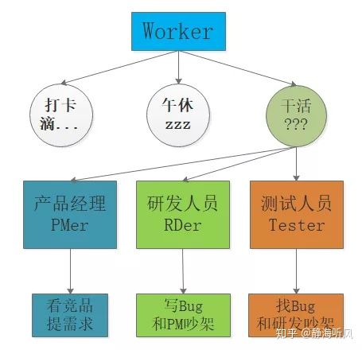
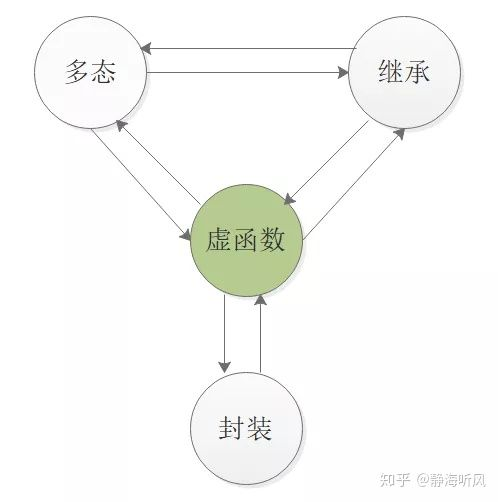
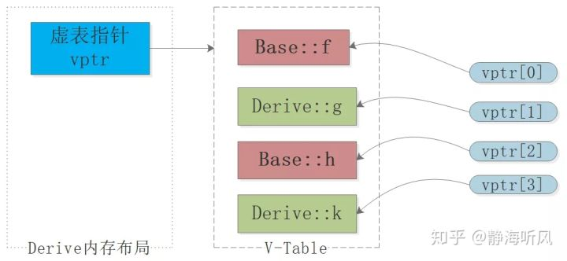
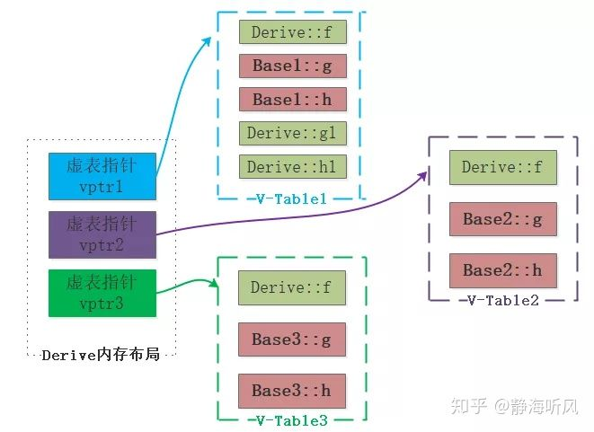

原文连接:https://www.cnblogs.com/backnullptr/p/12047900.html
0.前言
在后端面试中语言特性的掌握直接决定面试成败，C++语言一直在增加很多新特性来提高使用者的便利性，但是每种特性都有复杂的背后实现，充分理解实现原理和设计原因，才能更好地掌握这种新特性。
只要出发总会达到，只有出发才会到达，焦虑没用，学就完了，今天一起来学习C++的虚函数考点吧。
通过本文你将了解的以下内容：
- C++多态机制
- 虚函数的基本使用
- 虚函数的底层实现
- 纯虚函数和抽象类
- 虚析构函数
- 虚函数的优缺点
1.C++多态机制
- 多态机制简介
C++面向对象的三大特征：
- 多态(Polymorphism)
- 封装(Encapsulation)
- 继承(Inheritance)
从字面上理解多态就是多种形态，具体如何多种形态，多态和继承的关系非常密切，试想下面的场景：
- 派生类继承使用基类提供的方法，不需更改
- 同一个方法在基类和派生类的行为是不同的，具体行为取决于调用对象。
后者就是C++的多态需求场景，即同一方法的行为随调用者上下文而异，举个现实生活中类似的栗子，来加深理解：
基类Woker包括三个方法：打卡、午休、干活。
派生类包括产品经理PMer、研发工程师RDer、测试工程师Tester，派生类从基类Worker中继承了打卡、午休、干活三个方法。
打卡和午休对三个派生类来说是一样的，因此可以直接调用基类的方法即可。
但是每个派生类中干活这个方法具体的实现并不一样：产品经理提需求、研发写代码、测试找Bug。

计算机程序的出现就是为了解决现实中的问题，从上面的例子可以看到，这种同一方法的行为随调用者而异的需求很普遍，然而多态的设计原因只有C++之父Bjarne Stroustrup大佬最清楚了。
- 静态绑定和动态绑定
要充分理解多态，就要先说什么是绑定？
绑定体现了函数调用和函数本身代码的关联，也就是产生调用时如何找到提供调用的方法入口，这里又引申出两个概念：
- 静态绑定：程序编译过程中把函数调用与执行调用所需的代码相关联，这种绑定发生在编译期，程序未运行就已确定，也称为前期绑定。
- 动态绑定：执行期间判断所引用对象的实际类型来确定调用其相应的方法，这种发生于运行期，程序运行时才确定响应调用的方法，也称为后期绑定。
- 静态多态和动态多态
在C++泛型编程中可以基于模板template和重载override两种形式来实现静态多态。
动态多态主要依赖于虚函数机制来实现，不同的编译器对虚函数机制的实现也有一些差异，本文主要介绍Linux环境下gcc/g++编译器的实现方法。
多态本质上是一种泛型技术，说白了就是试图使用不变的代码来实现可变的算法，要么试图在编译时决定，要么试图在运行时决定。csdn博客专家-左耳朵耗子-陈皓
- 虚函数与三大特征
虚函数为多态提供了基础，并且借助于继承来发挥多态的优势，从而完善了语言设计的封装，可见虚函数与C++三大特征之间有紧密的联系，是非常重要的特性。

2.虚函数的基本使用
- 虚函数使用实例
使用virtual关键字即可将成员函数标记为虚函数，派生类继承基类的虚函数之后，可以重写该成员函数，派生类中是否增加virtual关键字均可，代码举例：
#include<iostream>
using namespace std;
class Worker{
public:
virtual ~Worker(){}
virtual void DoMyWork(){
cout<<"BaseWorker:I am base worker"<<endl;
}
};
class PMer:public Worker{
public:
//virtual void DoMyWork(){
void DoMyWork(){
cout<<"ChildPMer:Tell rd demands"<<endl;
}
};
class RDer:public Worker{
public:
//virtual void DoMyWork(){
void DoMyWork(){
cout<<"ChildRDer:Write code and solve bugs"<<endl;
}
};
class Tester:public Worker{
public:
//virtual void DoMyWork(){
void DoMyWork(){
cout<<"ChildTester:Find bugs and inform rd"<<endl;
}
};
int main(){
//使用基类指针访问派生类
Worker *ptr_pm = new PMer();
Worker *ptr_rd = new RDer();
Worker *ptr_ts = new Tester();
cout<<"#### use ptr #####"<<endl;
ptr_pm->DoMyWork();
ptr_rd->DoMyWork();
ptr_ts->DoMyWork();
ptr_pm->Worker::DoMyWork();
cout<<"-----------------------------"<<endl;
//使用基类引用访问派生类
PMer pmins;
RDer rdins;
Tester tsins;
Worker &ref_pm = pmins;
Worker &ref_rd = rdins;
Worker &ref_ts = tsins;
cout<<"#### use ref #####"<<endl;
ref_pm.DoMyWork();
ref_rd.DoMyWork();
ref_ts.DoMyWork();
ref_pm.Worker::DoMyWork();
}编译后，执行结果：
// 上述代码存储在文件virtual.cpp
// g++编译器执行编译
g++ virtual.cpp -o virtual
// 执行exe文件
./virtual
//详细输出
#### use ptr #####
ChildPMer:Tell rd demands
ChildRDer:Write code and solve bugs
ChildTester:Find bugs and inform rd
BaseWorker:I am base worker
-----------------------------
#### use ref #####
ChildPMer:Tell rd demands
ChildRDer:Write code and solve bugs
ChildTester:Find bugs and inform rd
BaseWorker:I am base worker- 基类对派生类的访问
通过基类的指针或引用指向派生类的实例，在面向对象编程中使用非常普遍，这样就可以实现一种基类指针来访问所有派生类，更加统一。这种做法的理论基础是：一个派生类对象也是一个基类对象，可以将派生类对象看成基类对象，但是期间会发生隐式转换。
- A *pA = new B；
- B b; A &rb=b;
class Base { ... };
class Derived: public Base { ... };
Derived d;
Base *pb = &d; // implicitly convert Derived* => Base*
3.虚函数的底层实现
- 虚函数表和虚表指针
不同的编译器对虚函数的实现方法不一样，并且C++规范也并没有规定如何实现虚函数，大部分的编译器厂商使用虚表指针vptr和虚函数表vtbl来实现。
现代的C++编译器对于每一个多态类型，其所有的虚函数的地址都以一个表V-Table的方式存放在一起，虚函数表的首地址储存在每一个对象之中，称为虚表指针vptr，这个虚指针一般位于对象的起始地址。通过虚指针和偏移量计算出虚函数的真实地址实现调用。
- 单继承模式
单继承就是派生类只有1个基类，派生类的虚函数表中包含了基类和派生类的全部虚函数，如果发生覆盖则以派生类为准。
举个栗子：
//dev：Linux 64bit g++ 4.8.5
#include <iostream>
using namespace std;
//定义函数指针类型
typedef void(*Func)(void);
//包含虚函数的基类
class Base {
public:
virtual void f() {cout<<"base::f"<<endl;}
virtual void g() {cout<<"base::g"<<endl;}
virtual void h() {cout<<"base::h"<<endl;}
};
//派生类
class Derive : public Base{
public:
void g() {cout<<"derive::g"<<endl;}
virtual void k() {cout<<"derive::k"<<endl;}
};
int main ()
{
//base类占据空间大小
cout<<"size of Base: "<<sizeof(Base)<<endl;
//基类指针指向派生类
Base b;
Base *d = new Derive();
//派生类的首地址--虚表指针
long* pvptr = (long*)d;
long* vptr = (long*)*pvptr;
//从虚函数表依次获取虚函数地址
Func f = (Func)vptr[0];
Func g = (Func)vptr[1];
Func h = (Func)vptr[2];
Func k = (Func)vptr[3];
f();
g();
h();
k();
return 0;
}特别注意，网上很多代码都是32位机器使用int*进行强转，但是指针类型在32bit和64bit机器的大小不一样，因此如果在64位机器执行32位的代码会出现第二个虚函数地址错误，产生coredump。
上述代码在Linux 64位机器 g++4.8.5版本下编译结果为：
size of Base: 8
base::f
derive::g
base::h
derive::k单继承派生类虚函数表的结构：

- 多继承模式
当派生类有多个基类，在派生类中将出现多个虚表指针，指向各个基类的虚函数表，在派生类中会出现非覆盖和覆盖的情况，以覆盖为例：
//dev：Linux 64bit g++ 4.8.5
#include<iostream>
using namespace std;
class Base1
{
public:
virtual void f() { cout << "Base1::f" << endl; }
virtual void g() { cout << "Base1::g" << endl; }
virtual void h() { cout << "Base1::h" << endl; }
};
class Base2
{
public:
virtual void f() { cout << "Base2::f" << endl; }
virtual void g() { cout << "Base2::g" << endl; }
virtual void h() { cout << "Base2::h" << endl; }
};
class Base3
{
public:
virtual void f() { cout << "Base3::f" << endl; }
virtual void g() { cout << "Base3::g" << endl; }
virtual void h() { cout << "Base3::h" << endl; }
};
class Derive :public Base1, public Base2, public Base3
{
public:
//覆盖各个基类的f
virtual void f() { cout << "Derive::f" << endl; }
virtual void g1() { cout << "Derive::g1" << endl; }
virtual void h1() { cout << "Derive::h1" << endl; }
};
int main()
{
Derive d;
Base1 *b1 = &d;
Base2 *b2 = &d;
Base3 *b3 = &d;
b1->f();
b2->f();
b3->f();
b1->g();
b2->g();
b3->g();
}上述代码在Linux 64位机器 g++4.8.5版本下编译结果为：
Derive::f
Derive::f
Derive::f
Base1::g
Base2::g
Base3::g多继承派生类各个虚指针和虚函数表的布局如图：

- 虚继承
虚继承是面向对象编程中的一种技术，是指一个指定的基类在继承体系结构中，将其成员数据实例共享给也从这个基类型直接或间接派生的其它类。
举例来说：
假如类A和类B各自从类X派生，且类C同时多继承自类A和B，那么C的对象就会拥有两套X的实例数据。
但是如果类A与B各自虚继承了类X，那么C的对象就只包含一套类X的实例数据。
这一特性在多重继承应用中非常有用，可以使得虚基类对于由它直接或间接派生的类来说，拥有一个共同的基类对象实例，避免由菱形继承问题。
菱形继承(钻石问题)：

虚继承的作用：
菱形问题(又称钻石问题)带来了二义性和多份拷贝的问题，虚继承可以很好解决菱形问题。虚继承将共同基类设置为虚基类，从不同途径继承来的同名数据成员在内存中就只有一个拷贝，同一个函数名也只有一个映射。从而解决了二义性问题、节省了内存，避免了数据不一致的问题。
维基百科虚继承的栗子：
#include <iostream>
using namespace std;
class Animal {
public:
void eat(){cout<<"delicious!"<<endl;}
};
// Two classes virtually inheriting Animal:
class Mammal : virtual public Animal {
public:
void breathe(){}
};
class WingedAnimal : virtual public Animal {
public:
void flap(){}
};
// A bat is still a winged mammal
class Bat : public Mammal, public WingedAnimal {
};
int main(){
Bat b;
b.eat();
return 0;
}在后续学习继承和C++对象内存布局时，将对虚继承的底层实现原理进行展开，本文暂时不深入讨论。
4.纯虚函数和抽象类
虚函数的声明以=0结束，便可将它声明为纯虚函数，包含纯虚函数的类不允许实例化，称为抽象类，但是纯虚函数也可以有函数体，纯虚函数提供了面向对象中接口的功能，类似于Java中的接口。
语法格式为：virtual 返回值类型 函数名(函数参数) = 0;
需要抽象类的场景：
- 功能不应由基类去完成
- 无法缺点如何写基类的函数
- 基类本身不应被实例化
就像虽然有Animal类，但是并不能生成一个动物实例，并且Animal的类的成员函数无法定义，需要其派生类Tiger类、Fish类来具体实现，这种思想在面向对象的接口设计很普遍。
class CPerson{
public:
virtual void hello() = 0;
};
CPerson p; //实例化抽象类 编译错误如果一个类从抽象类派生而来，它必须实现了基类中的所有纯虚函数，才能成为非抽象类，否则仍然为抽象类。
#include<iostream>
using namespace std;
class A{
public:
virtual void f() = 0;
void g(){ this->f(); }
A(){}
};
class B:public A{
public:
void f(){ cout<<"B:f()"<<endl;}
};
int main(){
B b;
b.g();
return 0;
}
5.虚析构函数
- 虚析构的作用
实现多态的基类析构函数一般被声明成虚函数，如果不设置成虚函数，在析构的过程中只会调用基类的析构函数而不会调用派生类的析构函数，从而可能造成内存泄漏。
虚析构举例：
#include<iostream>
using namespace std;
class Base{
public:
Base() { cout<<"Base Constructor"<<endl; }
~Base() { cout<<"Base Destructor"<<endl; }
//virtual ~Base() { cout<<"Base Destructor"<<endl; }
};
class Derived: public Base{
public:
Derived() { cout<<"Derived Constructor"<<endl; }
~Derived() { cout<<"Derived Destructor"<<endl; }
};
int main(){
Base *p = new Derived();
delete p;
return 0;
}非虚析构的输出：
Base Constructor
Derived Constructor
Base Destructor虚析构的输出：
Base Constructor
Derived Constructor
Derived Destructor
Base Destructor可以看到在Base使用虚析构时会执行派生类的析构函数，否则不执行。
- 虚析构的使用时机
如果某个类不包含虚函数，一般表示它将不作为一个基类来使用，因此不使虚析构函数，否则增加一个虚函数表和虚指针，使得对象的体积增大。如果某个类将作为基类那么建议使用虚析构，包含虚函数则这条要求成为必然。无故使用虚析构函数和永远不使用一样是错误的。
- 为什么构造函数不能是虚函数
其他语言中可能会成立，但是在C++中存在问题，原因主要有：
- 构造对象时需要知道对象的实际类型，而虚函数行为是在运行期间才能确定实际类型的，由于对象还未构造成功，编译器无法知道对象的实际类型，俨然是个鸡和蛋的问题。
- 如果构造函数是虚函数，那么构造函数的执行将依赖虚函数表，而虚函数表又是在构造函数中初始化的，而在构造对象期间，虚函数表又还没有被初始化，又是个死循环问题。
总结：
这块有点绕，从编译器的角度去看，构造函数就是为了在编译阶段确定对象类型、分配空间等工作，虚函数为了实现动态多态需要在运行期间才能确定具体的行为，显然构造函数不可能同时具备静态特性和动态特性。
6.虚函数的优缺点
虚函数的优点主要实现了C++的多态，提高代码的复用和接口的规范化，更加符合面向对象的设计理念，但是其缺点也比较明显，主要包括：
- 编译器借助于虚表指针和虚表实现时，导致类对象占用的内存空间更大，这种情况在子类无覆盖基类的多继承场景下更加明显。
- 虚函数表可能破坏类的安全性，可以根据地址偏移来访问Private成员
- 执行效率有损耗，因为涉及通过虚函数表寻址真正执行函数
7.参考资料
- https://www.cnblogs.com/chio/archive/2007/09/10/888260.html
- https://juejin.im/post/5d1ee816f265da1bb13f5196
- https://harttle.land/2015/06/28/cpp-polymorphism.html
- https://www.jianshu.com/p/5d6edcb3b83e
- https://www.jianshu.com/p/4dcd834be1ab
- https://blog.csdn.net/zhang2531/article/details/51218149
- https://www.zfl9.com/cpp-polymorphism.html
- https://zhuanlan.zhihu.com/p/41309205
- https://cloud.tencent.com/developer/article/1155155
- https://blog.csdn.net/qq_16209077/article/details/52788864
- https://jocent.me/2017/08/07/virtual-table.htm